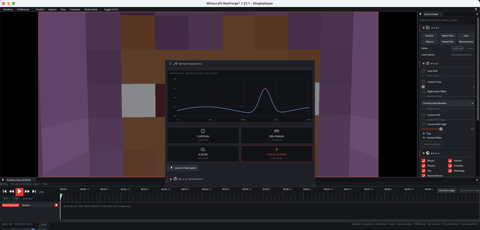

Technical wiki for creators and addon developers.
Visuals, Render Filter, Movement and Dialogue
Scene-cleanup and visual-control tools before export.
Free downloadAll Rights ReservedNeoForge 1.21.1

01
Visuals
Visuals controls scene look: time, roll, camera shake, fog, color grade, world rendering and look library. Use it to keep shots visually consistent.
- Disable sky or world elements when preparing compositing or transparent export.
- Use color grade carefully to preserve readability.
- Save recurring looks as production references.
02
Render Filter
Render Filter hides entities or particles that distract from the shot. Use it on crowded servers, roleplay scenes or trailer exports.
03
Movement
- Flight direction controls how the editor camera moves.
- Momentum makes movement smoother or more immediate.
- X/Y/Z/Yaw/Pitch locks constrain axes and rotations for precise shots.
04
Dialogue
Dialogue helps manage captions and narrative text for roleplay content or presentations.